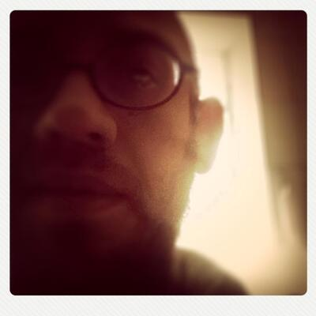

igor medeiros
Musico de Recife radicado em SP, com discos e faixas lancadas pelos selos Tokinogake [Japan], Music Experience Movement [NYC], Antena.art.br [Porto Alegre] & Sintese Coletiva [SP], e executadas em programas como Fractal Meat [NTS Radio] e MIMINOIMI Podcast [Japan].
Alem de luthier de sintetizadores analogicos DIY, eh um dos organizadores da AlgoraveBR, e participante da Roda de Codigo, que promove workshops e encontros para pratica de livecode em Sao Paulo.
Seu mais recente album foi lancado no ultimo dia de 2024 e pode ser escutado em [https://igormedeiros.bandcamp.com]
'musica de improviso, gerada com uma diversidade de materiais como sintetizadores, instrumentos construidos a mao ou computadores, ora solo, ora em grupos colaborativos, tanto presenciais ou via rede -- musica eletroacustica, espacializacao sonora, drone, noise, algorave.'